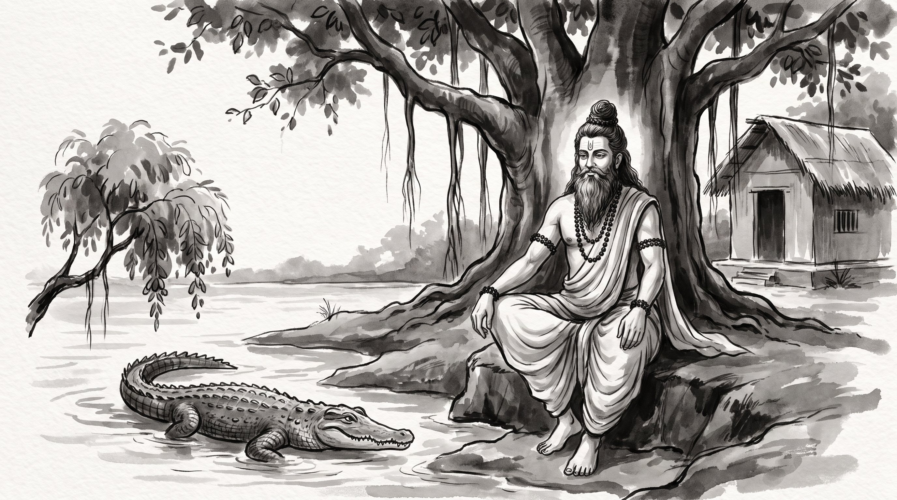

The Jambu Branch: Presence of Mind When a Trusted Ally Betrays You

The morning sun filtered through the dense canopy of the forest hermitage, casting long patterns of light across the roots of the ancient banyan tree. Raghav, a master caravan surveyor and chief route-keeper of a great merchant guild, sat motionless upon a grass mat near the threshold of the thatched hut. His hands were clenched upon his knees, his jaw set tight, and his gaze fixed upon the dusty ground. The quiet hum of cicadas filled the clearing, but inside him churned the acute exhaustion of a sudden, calculated betrayal.
Across from him sat the venerable Rishi, still and observant. The sage's silver beard rested against an unstitched cotton dhoti, his matted locks were bound in a traditional Vedic jata topknot, and beads of natural rudraksha encircled his wrists. A faint line of sacred ash rested across his brow. He watched the younger man for a long while before speaking.
"You sit like an archer whose closest companion stepped behind him and cut the bowstring," the Rishi said softly.
Raghav raised his eyes, breathing heavily. "Master, for two years I treated Vivek, the guild's chief trade syndic, as my most trusted confederate. We charted joint trade routes over private meals, settled territorial disputes before the elders convened, and shared frank talk about choked passes and overloaded carts that never touched the formal registry. Three days ago, he urged me to accompany him to a closed hearing with the council of merchant elders, claiming we needed to present a united front to secure expanded guild caravans and supplies for our expeditions."
Raghav swallowed the bitterness rising in his throat. "The moment the council chamber doors were bolted, Vivek produced a bundle of my own private journals—notes I had shared in confidence detailing mountain pass hazards and wagon axle wear. He presented them to the council elders as proof of chronic negligence and poor judgement on my part. He demanded that our entire guild of surveyors and wagon-masters be stripped of independent governance and placed under his direct command. I sat there in stunned silence while the elders nodded along. The ambush was total, and I have three days to answer before the decree becomes permanent law. How does one survive when the very ally who carried you into deep water turns around to drown you?"
The Crocodile's Crossing in the Panchatantra
The Rishi listened with calm equanimity. He pointed with an open hand toward the slow-moving river that curved past the ashram bank, where the dark silhouette of an armored reptile slipped beneath the surface without a ripple.
"Your grief is sharp, Raghav, but your circumstance has played out along riverbanks since the dawn of memory," the Rishi said. "In the fourth book of the Panchatantra, titled Labdhapranasham—the Loss of What Was Gained—Pandit Vishnu Sharma preserved the ancient account of Raktamukha the monkey and Karalamukha the crocodile."
"High upon the banks of the great ocean grew an enormous jambu tree, heavy with succulent, rose-apple fruits. In its branches lived Raktamukha, an agile monkey who spent his days eating the sweet harvest. One afternoon, a crocodile named Karalamukha crawled out of the surf and rested beneath the shade of the tree. Taking pity on the tired reptile, Raktamukha plucked the ripest fruits and dropped them down. The crocodile ate gratefully, and within weeks, a deep daily companionship took root. They spent hours conversing about the world, sharing thoughts and laughter."
"Karalamukha took some of the sweet jambu fruits home to his wife, who lived in a cave on a distant island. After tasting the exquisite sweetness, she questioned her husband closely. When she learned that a monkey ate these fruits every single day, her heart filled with unnatural covetousness. 'If this monkey lives entirely on such nectar,' she declared, 'his heart must be the sweetest delicacy in existence! Bring him to our home, for I must eat his heart. If you refuse, I will starve myself to death.'"
"The crocodile protested in horror," the sage continued. "'He is my loyal brother; he feeds me daily and trusts me completely. How can I murder a friend who has never done me harm?' Yet his wife remained obstinate, weeping and threatening suicide until Karalamukha yielded to her pressure. He swam back to the shore with a treacherous intention masked beneath warm words."
"Karalamukha greeted the monkey with exaggerated enthusiasm. 'My friend, you have fed me sweet fruits for months, yet my wife scolds me for neglecting hospitality. She has prepared an elaborate feast in our home to honor you. Climb upon my back; I will carry you across the waves to our island.' The monkey, having never known malice from his friend, descended from the branches and climbed onto the broad armor of the crocodile's back."
"Out into the ocean they went. But when they reached the midpoint of the channel, where the water grew black and fathomless, the crocodile's swimming slowed. Heavy guilt weighed upon him, and his movements faltered. The monkey noticed the change and asked: 'Brother, why do you swim so heavily, and why is your countenance darkened?'"
"Unable to bear the silence, the crocodile confessed the grim reality: 'Forgive me, Raktamukha. There is no feast. My wife demands to eat your heart, believing it to be sweeter than all fruits. I am carrying you to your death.'"
"Consider the monkey's position," the Rishi remarked. "He was in the middle of a vast ocean, unable to swim, clinging to the back of an apex predator. If he had screamed in terror, the crocodile would have submerged and drowned him on the spot. If he had attacked the crocodile with teeth and claws, the armored beast would have rolled and devoured him in a moment. Blind rage and paralyzed panic both meant immediate death."
"Instead, Raktamukha summoned the highest virtue of statecraft: pratyutpannamatitva—instantaneous presence of mind. He did not flinch, weep, or accuse. He burst into an affectionate laugh."
"'My dear brother!' the monkey exclaimed with effortless cheer. 'Why did you not speak of this while we were still on the riverbank? If your noble wife desires my heart, it would be my highest honor to offer it to her. But we monkeys do not keep our hearts inside our ribs when leaping between heavy branches—they would be bruised and torn by our movements! We keep our hearts stored safely in a hollow high up in the jambu tree. Turn back immediately, so I may fetch my heart from the tree and bring it along for your wife's banquet.'"
"The crocodile, blinded by his own simple greed and relieved by his friend's apparent compliance, turned his snout around and swam with all his strength toward the shore. The instant his claws touched the shallow silt of the riverbank, the monkey leaped from the reptile's back like a loosened arrow, scrambled up the trunk of the jambu tree, and vanished into the high foliage."
"When the crocodile called out from the shallows, asking him to retrieve his heart and return, the monkey looked down from the branches and laughed in scorn: 'You foolish creature! Does any living being keep their heart outside their chest? Your treachery has destroyed the bridge between us. Return to your home empty-handed, for you will never taste the fruit of my tree again.'"
What the Crocodile Teaches
The Rishi turned his gaze back to Raghav.
"In every merchant hall and royal court there are crocodiles, Raghav. They make close friendships in times of peace, accept your knowledge and your good faith, and then some pressure from home or some private hunger demands that they sacrifice you. When such an ally turns, he moves in four steps, and Vivek took every one."
1. He Draws Out Your Weak Places: The crocodile comes close under the banner of friendship. He invites you to lower your guard, to share your private worries, to show him the flaws you have not yet laid before the elders: "Speak freely with me; between the traders and the wagon-masters there must be no secrets if we are to protect each other."
2. He Carries You into Deep Water: The ambush never happens on your own ground. It happens where your ledgers, your wagon-masters, and your old friends are absent: a closed hearing, a sudden tribunal, a council with bolted doors. "I took the liberty of describing our routes to the elders myself, so they would not be troubled with small details."
3. He Shows His Teeth in Midstream: Only when you are far from shore does the true purpose appear. He uses your own confidences to strip away your freedom, take your carts and animals, and place your craft under his rule. Because you are on his ground, he expects your shock to keep you silent.
4. He Counts on Panic or Rage: He depends on you to either thrash or freeze. If you lose your temper before the elders, you prove his claim that you are reckless. If you sit numb with despair, his account becomes the only account.
The Rishi's Counsel: Reaching the Shore
Raghav leaned forward, his breathing steadier now. "Master, the decree will be written in three days. What must I do to reach the shore?"
The Rishi held up three fingers.
1. Stay Calm and Win Two Days
When the ambush comes inside the council chamber, do not fight over details while you are still in deep water. Say something calm that grants nothing: "These are serious matters and deserve a full hearing. Let no change be made to the surveyors' guild until the third day, when the complete records can be laid before the council." That same evening, send a sealed letter to every elder who was present, confirming that the matter waits for the third day.
2. Bring Your Heart Back to the Tree
The monkey lived because he knew his strength was in the jambu tree, not in the sea. Gather your route ledgers, your survey seals, and the signed charters of past expeditions. Write two pages, no more, that set each of Vivek's charges beside the record showing that every pass hazard and every worn axle was reported and approved by the elders at the time. Bring three senior wagon-masters to stand beside you when you read it.
3. Close Every Private Door
Once you are safely ashore, end every private, unrecorded dealing with the man who betrayed you. Send all future words to him through the guild register, written petitions, and the open council. If he invites you to dine or to talk alone, decline politely, or bring a senior master surveyor as your witness.
Source: Panchatantra, Book 4 (Labdhapranasham)
Raghav bowed until his forehead touched the edge of the reed mat. The fog of betrayal had cleared, and in its place was a cool, careful clarity. He rose with his back straight, ready to return to the city and stand his defence on the firm ground of the written record.
"Never wrestle the crocodile in deep water; find the reason that brings him back to your shore."